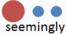

Teaching vocabulary: the essentials

Without grammar, very little can be
conveyed. Without vocabulary, nothing can be conveyed.
Wilkins (1972): 111
This is a practical guide, not concerned too much with the theories.
None of what follows focuses on the relationships between words, such as
synonyms and antonyms. It's quite a technical area but if you are
interested in learning a good deal more about words, try
the guide to
meaning in the in-service training area.
 |
Task: Read this passage and think about what the point of the story is.
Why is it amusing (to some)? Click here when you have an answer. |
 |
‘There's glory for you!’ ‘I don't know what you mean by "glory",’ Alice said. Humpty Dumpty smiled contemptuously. ‘Of course you don't – till I tell you. I meant “there's a nice knock-down argument for you”!’ ‘But "glory" doesn't mean "a nice knock-down argument",’ Alice objected. ‘When I use a word,’ Humpty Dumpty said, in rather a scornful tone, ‘it means just what I choose it to mean – neither more nor less.’ |
The point is that we can't arbitrarily decide what words
mean. The meaning of words comes about from an agreement within
our speech community about what they mean. What words mean in
English is what the majority of English speakers agree that they mean.
Otherwise, communication would be impossible.
A speech community is a somewhat slippery concept. It can apply to
all speakers of a language everywhere and, in the case of English, that
would encompass some 750 million people, or it can be as small as two
people who happen to share a rather personal variety of the language.
What, for example, do you call the television remote control in
your family?
 |
But what does mean mean? |
When we think about what words mean, we are usually considering
denotation, i.e., what the words signify. For
example,
ship = floating transport
table = flat surface on legs
What do these words mean? Click here when you have an answer.
ceiling, pig, demonstrator, partisan, queer, fascist, tight-fisted, thrifty
We won't all have the same reactions but it is clear that words also have
connotation. They come with negative or positive
attributes. The word ceiling is unlikely to have such
attributes but the others in this list clearly do depending on
your culture and your own attitudes. It's true for most English
speakers that thrifty is positive and tight-fisted is
negative, just as mulish is negative, usually, and
determined is usually positive.
If a word we are teaching is likely to have connotations such as
these, we need to make sure we teach them along with the word's
spelling, its grammar, collocations and pronunciation. If you
are unsure about the term 'collocation' go to the
language guide to
collocation, linked in the list of related guides at the end, for a short review.
Now finish this sentence in your head and click
here.
At the end of the street was a bank …
If you had assumed that a bank was a financial institution, you are in the majority. But it needn't be because words take on meaning in context and that's the way we should teach them.
In the classroom
 |
What do learners need to know about words? |
This is not a complete list but it's a place to start. There are six things that learners need to know about new words that they encounter but they don't all have to be introduced at once.
- Meaning
Rather obviously, learners need to know what a words means but, as we saw above, meaning includes both denotation and connotation so if a word has a strong emotional tone, we need to tell our learners about it.
Dealing with meaning is one of the most difficult things to do in a classroom and also the most important. See below for some comments about context and co-text. - Word class
Words can inhabit more than one word class at a time and learners need to know what the word's grammatical function in a sentence is. For example, in
I'll bank all the money straight away
the word bank is functioning as a verb
but in
I'll put all the money in the bank
the word is acting as a noun.
Learners always need to know in what word class a new item lives so we need to show it when we present the word. Here's how it is normally done:
seem (v.)
seemingly (adv.)
seemly (adj.)
There is an essential guide to word class on this site, linked below. - Pronunciation
Learners need to be able to pronounce items they learn satisfactorily. That means pronouncing the individual syllables acceptably and also knowing where to put the stress.
We need, therefore, to mark the stress on the word when we present it.
You can do this by simply putting a box above the stressed syllable, like this:

or you can use small circles for each syllable, making the stressed one larger and/or in a different colour, like this:

Pronunciation is a slightly technical area (actually very technical) but modelling the pronunciation of a word is usually simple (providing you know how to pronounce it).
Modelling doesn't always work very well, however, because many learners simply can't hear the difference between their production and the model. That's why many teachers use phonemic transcription to help. (If you want to learn how to transcribe, there's a link to a course on this site at the end.)
The word seemingly, for example, is transcribed as /ˈsiː.mɪŋ.li/ and if you look carefully at the transcription, you can see five facets of the pronunciation:- the first vowel is quite long (/iː/) and requires a slight stretching of the mouth laterally to say it correctly (say cheese). In transcriptions, long vowels are denoted by placing ':' after them.
- the letters ng form a single sound (/ŋ/) and it requires you to let the air flow out through the nose (so it's called a nasal sound).
- the last sound in the word is similar to the first long vowel but it is shorter and the same as the last sound in, e.g., happy.
- there are three syllables and the transcription divides them with a '.' between them: see.ming.ly.
- the stress falls on the first syllable and that is marked in the transcription with a small raised mark, ˈ, before the syllable which is stressed.
- Word grammar
You may be surprised to learn that words have grammar associated with them but many do. For example, in:
The house is large
the word large is a simple adjective from which we can form larger and largest so we can also say
The house is very large
but in:
The house is enormous
we cannot insert very so
*The house is very enormous
is wrong but:
The house is truly enormous
is OK.
This, by the way, is all to do with the concept of gradability (to which there is a guide on this site, linked below) but there are lots of other sorts of word grammar.
Another critical area is to do with verbs. We can, for example, say:
I stood
I arrived
and
I took the money
I expected the train
but we cannot say:
*I stood the forest
*I arrived the hotel
or
*I took
*I expected
The reason is that some verbs in English never take an object, some always take an object, some can do both and some can take two objects. The phenomenon is called transitivity. For more, see the guide to the essentials of verbs, linked below.
If the word has some important grammar associated with it, we need to make sure our learners know what it is. - Collocation
Certain words are more likely to appear with other words. So for example,
the word torrential will often precede the word rain
We can say:- a strong wind but not a heavy wind
- we can have heavy rain but not strong rain
- a huge, beautiful, peaceful, sheltered garden not a thoughtful, depressed, unkind or embarrassed garden
- make a mistake but not do a mistake
- be in a meeting, participate in a meeting, hold a meeting, have a meeting but not do a meeting, make a meeting or eat a meeting
- pay attention but not do attention
- scream loudly but not scream wistfully
- whisper quietly but not whisper overtly
and so on.
Any word which is used in particular collocations should be presented that way.
There is a guide to collocation on this site, linked below.
- Spelling
It is sometimes asserted that English spelling is a nightmare of irregularities and exceptions and it is true that it is a tricky area for everyone (not just learners of English).
However, there are rules and many English words can be successfully spelled simply by listening to how they are said and writing them down.
If, on the other hand, one is teaching a word like plough, utterance or quintessential, then it makes sense to point out and give some practice in how they are written. Writing a word down correctly is an aid to memory, too, of course.
For more, see the guide to spelling, linked below.
 |
Context |
Very few words mean anything at all when they stand
alone. For example, if someone says:
teddy bear
the utterance carries almost no real meaning. Although we know what a
teddy bear is, nobody who didn't know would be able to guess the meaning from what
was said. However, if someone says:
The little girl took her toy teddy bear with her to the park and sat
him on a bench in the sunshine
then we will be able to guess that a teddy bear is something children
have and something you can sit on a bench. That's probably enough
for the meaning to be clear.
If we combine that with the picture, then we have all the meaning we
need.
We have to present any word in two ways:
- With a co-text (i.e., the words around it)
- With a context (i.e., where, who, with whom, by whom, when, what for etc.)
 |
Guessing the meaning from context |
Given a context and a co-text, learners can often deduce the meaning of a word without your having to explain it.
In these examples, the assumed unknown word is in brown.
| A really noisy bash is going on next door. The music is far too loud. |
|
Students work together to decide:
So it must be a kind of social gathering. |
| He has an unpleasantly raucous voice. It's like a road drill. |
So it must mean unpleasant to listen to. |
| There's a really noisy party taking place next door. |
So it must mean happen. |
| The disco was so deafeningly loud it made my head ache. |
So it must mean extremely noisy. |
 |
Focusing on lexical fields |
A lexical field refers to words which are connected by the context in which they are found. or by the types of meaning they express. For example:
- Add to the list
- nurse, doctor, medicine, hospital, ambulance, ward, emergency, ...
- Spot the odd one(s) out
- wet, soaked, humid, drenched, flooded, damp, rainy
- Match the verb to the noun
- builder, nurse, teacher, detective
treat, construct, arrest, prepare - Divide the list into 2 / 3 / 4 etc.
- sweets, sugar, hammers, chocolates, nails, eggs, saws, newspapers, bacon, screwdrivers, glue, paint, baked beans, pens
 |
Using word clines |
Many words (particularly adjectives) live on a cline between a
minimal use and a more extreme meaning of the concept. For
example, words which describe size may be set on a cline from very
small to very large, like this:

and words which refer to movement can be similarly arranged, like
this, for example:

and those to do with the size of entities can be show as:

You could probably draw similar diagrams to express concepts such
as heat (freezing up to boiling), light (pitch
black up to blinding), wetness (arid up to
inundated), feelings (detest up to adore),
houses (slum up to palace) and so on.
As a quick way of making the relative strengths of words or the
attributes to describe these notions, clines like this are
easy to draw on a whiteboard even if you do not have time
to prepare them beforehand.
However, there are some issues to consider:
- Collocation:
Not all the words will naturally operate in the same relationships. For example:
The mouse ran across the room
but not
*The mouse galloped across the room
and
A minute speck of dust
but not
A minute stone
and both
A pretty village
A pretty hamlet
but not
A pretty city - Connotation:
Some words carry positive or negative senses for most speakers so while:
We ambled down to the pub
implies a pleasant, unhurried movement,
She crawled into the garage
implies an uncomfortably slow manoeuvre.
Equally, infinitesimal implies unimportant in a way that microscopic does not. - Definitions and relativity:
Any two speakers of English are unlikely to agree exactly where on the cline certain words fit and, moreover, many are relative so, for example, while a mouse is tiny in comparison to a horse, it is huge in comparison to a flea.
Nevertheless, dealt with sensibly with due regard to these issues, clines are a useful way to embed the concepts.
 |
Dealing with lexis in texts |
Here's a short text:
He was a sick man and
was really worried, almost depressed about it, so he went to his local
surgery and talked to the kind doctor there. She took some tests and
examined him carefully.
He was delighted to find out that it was nothing more serious than flu
and, smiling at his own silliness, he went home to his cottage with a
light heart.
- Chasing down lexical chains
- Find all the words in the text that describe people
Find all the words connected to medicine
Find three words which tell you he was happy - Provide the definition and get the learners to find the words
- Find a word which means very unhappy
Find a word which means a type of house
 |
Lighter activities |
- In the manner of
- Prepare cards with instructions such as
Open the box extremely carefully
Open the parcel frantically
Students mime to each other and try to guess the adverb. - Categories
- One student goes in the hot seat and tries to guess the category
from the example. E.g., "Things that are hot".
Students in the team call out examples of such things: the sun, a cooker, a cigarette, a car's engine, someone with a fever etc.
Other examples:
Things that are sold in cans
Things that are yellow
Things that break easily
etc. - Pictures
- One student starts a drawing on the board and the team members guess the word as soon as they can. There are endless variations on this.
| Related guides | |
| lexical meaning | for a guide in the in-service area |
| transcription | a course to help you learn how to transcribe the sounds of English |
| word class | for the essential guide to this area |
| gradability | for more on an aspect of adjective use |
| essentials of verbs | for more on possibly the most important word class |
| collocation | for the guide to explain an important relationship between words |
| spelling | for the rules in English and some comment on the system |
References:
Carroll, L, 1872, Through the Looking Glass
Wilkins, DA, 1972, Linguistics and Language Teaching.
London: Edward Arnold
Other references for lexis and vocabulary:
French Allen, V, 1983, Techniques in Teaching Vocabulary,
Oxford: Oxford
University Press
Gairns, R & Redman, S, 1986, Working with Words: A Guide to Teaching
and Learning Vocabulary, Cambridge: Cambridge University Press
Hoey, M, 2006, Lexical Priming: A New Theory of Words and Language,
London: Routledge
Lewis, M, 1997, Implementing the Lexical Approach, Brighton,
UK: Language Teaching
Publications
Lewis, M, 2002, The Lexical Approach, Thomson ELT
Lindstromberg, S & Boers, F, 2008, Teaching Chunks of Language: From
Noticing to Remembering, Helbling Languages
McCarthy, M, 1990, Vocabulary, Oxford: Oxford University Press
Morgan, J. & Rinvolucri, M, 1986, Vocabulary, Oxford: Oxford University Press
Schmitt, N, 2000, Vocabulary in Language Teaching, Cambridge: Cambridge University
Press
Schmitt, N & McCarthy, M, 1997, Vocabulary: Description, Acquisition
and Pedagogy, Cambridge: Cambridge University Press
Thornbury, S, 2002, How to Teach Vocabulary, Harlow: Longman